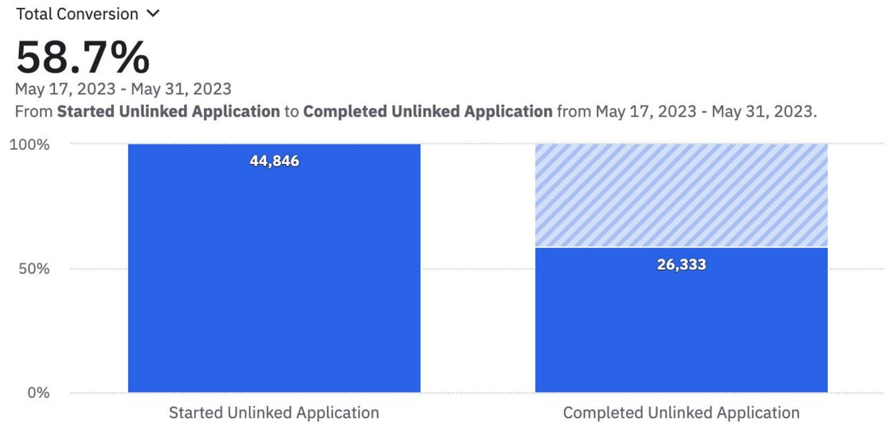
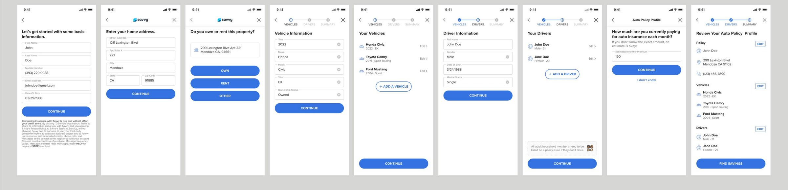
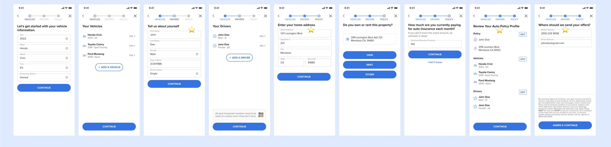
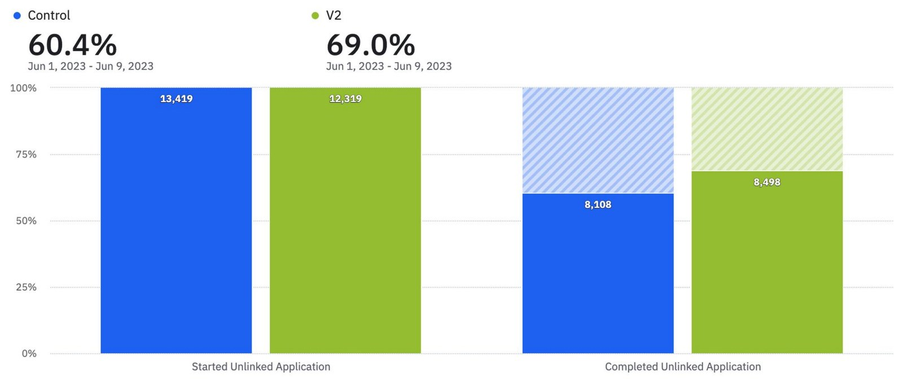

Context
Where the business wins or loses
Savvy.Insure, by Trellis, set out to make insurance easier for everyone. Someone who wants car insurance comes to Savvy, tells us about themselves, their cars and their drivers, and gets quotes back. That flow is where the business makes or loses money.
Problem
Four in ten people gave up before their quote
From 17 to 31 May 2023, 44,846 people started the unlinked application and 26,333 finished it: a completion rate of 58.7%. Add one line on what “unlinked” means, e.g. people who fill the form in by hand rather than linking an existing policy.


Approach
Learn cheaply, decide with evidence
- The cheapest way to learn. Not every experiment needs to be an A/B test. We framed each change as a hypothesis, picked the lightest method that could confirm or disconfirm it, and used A/B tests where we needed statistical confidence.
- One small team, a steady cadence. With a front-end engineer, a back-end engineer and a growth engineering consultant, I designed and shipped experiments on around 15 parts of the flow in three months.
- Making it a habit. I co-wrote and presented How do we make good decisions about product investment?, sharing how we chose methods, from interviews to A/B tests, and why learning matters more than being right.
| # | Change | Hypothesis | Result |
|---|---|---|---|
| 01 | Re-order the application | Asking for the car before contact details will raise completion. | 60.4% → 69.0% |
| 02 | Experiment | We think … will … | Result |
| 03 | Experiment | We think … will … | Result |
| 04 | Experiment | We think … will … | Result |
Add the rest of the ~15, or the 4–6 most telling. Losing tests are worth including: they show the judgment.
Featured experiment
Ask for the car before the phone number
Hypothesis: changing the order of the unlinked application flow will increase conversion.
The control flow opened by asking for name, phone, email and date of birth, before Savvy had given anything back. V2 starts with the car and the drivers, builds up to the policy, and only asks for contact details at the very end, as “Where should we send your offers?”





Outcome
$3.5MM in predicted annual revenue
- Over three months, the experiments added up to $3.5MM in predicted gross annual revenue.
- The re-order test lifted completion by 8.6 points, a 14% relative improvement. Did V2 ship to everyone? Say so here.
- We left the team with the infrastructure to run similar tests with ease, and a shared way of deciding what to build.
Learnings
Value before data
- People need Trellis to feel valuable before they give their info. Order matters.
- Learning is more important than being right. Good testing infrastructure means more people share ideas, and it takes the HiPPO out of decisions.
- What I’d do differently: one or two honest lines